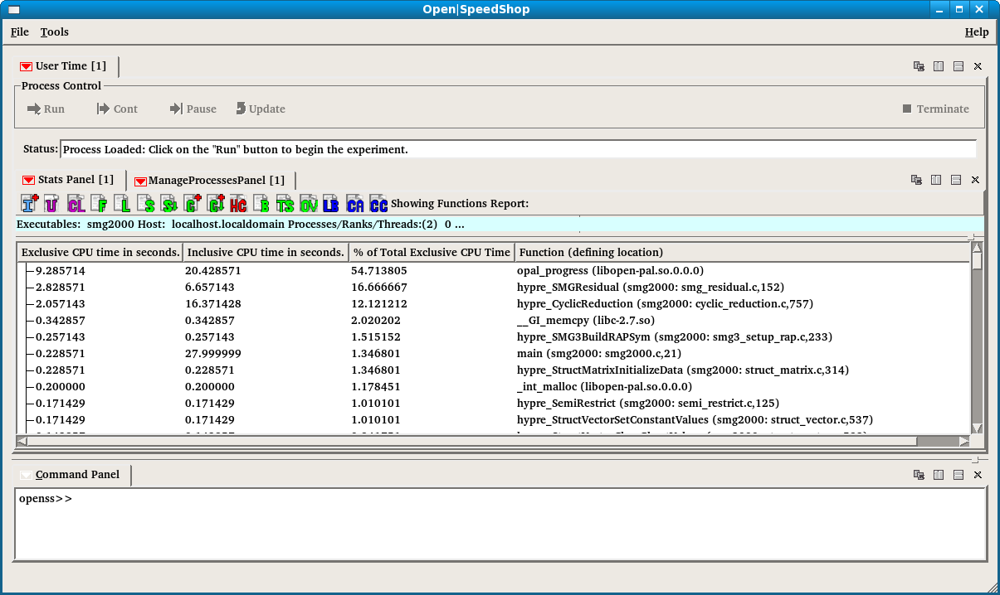

Using Open|SpeedShop™
Within a terminal window, enter: openss
-f "mpirun -np 2 /home/openssuser/mpi/smg2000/test/smg2000 -n 50 50 50"
usertime
This corresponds to: openss -f
"executable_or_mpi_application" <experiment_type>
This will start Open|SpeedShop's immediate command interface and
execute the executable or application with Open|SpeedShop's performance
analysis gathering enabled.
The results will be: 1) Application execution output
2) Performance analysis data report generation
3) An Open|SpeedShop database file
In this particular example, we are going to gather user time
information from an MPI job (Note: We are going to simulate an
MPI run by oversubscribing our processor).
For demonstration purposes, we are going to gather information from
one of Open|SpeedShop's supported implementations of the message
passing interface - OpenMPI.
We have provided test binaries that can be utilized for our purposes.
Within the terminal window, enter openss -f
"mpirun -np 2 /home/openssuser/mpi/smg2000/test/smg2000 -n 50 50 50"
usertime
Note: In this particular case, the double quotes are
required).
We should then be greeted with the program output and the usertime
experiment results for the smg2000 application.
Once the experiment has terminated, we can view the collected data
in other forms than that of the default output by going through the GUI
by using the command: openss -f smg2000.usertime.openss.
smg2000.usertime.openss is the name of the database file created by
Open|SpeedShop
after running the usertime experiment on smg2000.
Open|SpeedShop used
the name of the application and the name of the experiment type to form
the
performance results database file name.
The opening of the performance database creates the default view
corresponding to the experiment type. For usertime, the default
view
is shown below.
